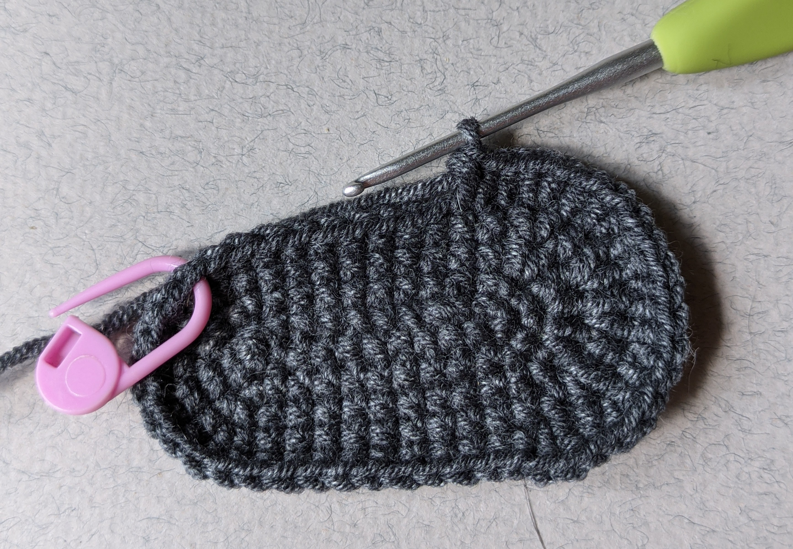
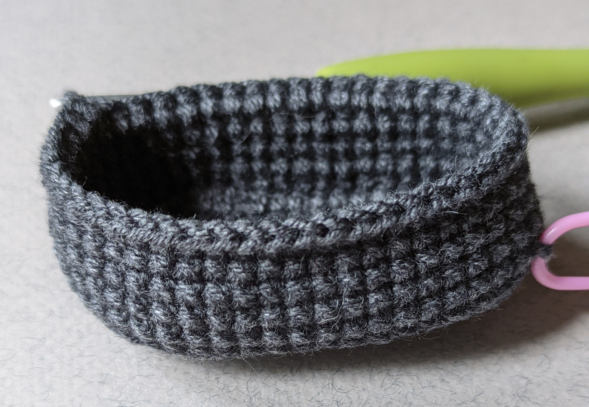

I`ll tell you how to knit with a hook the ladybug with removable backpack. Without this backpack it can become a cute small fly in a moment.If you are ready to make experiments with different colors, you can make some different bugs – easy and fun with one master class.
Row begin marker can shift to the right on hook knitting. I`ll tell if you need to pay attention to begin of row. Size of your own toy may be different from mine. All details should be knitted spiral without lifting, unless otherwise indicated. I am binding arms and legs in this toy, that`s why you need to knit all the details of arm and hands before knitting the body. I recommend you to use invisible deductions. This method gets you rid from small holes when knitting. It is that you are knitting deduction for front semi-loops, not both.
Alize Cotton Gold - Thread length: 330 meters, skein weight: 100 gr., contains 55% of cotton, 45% of acryl:
You can use any convenient yarn with similar characteristics: YarnArt Jeans, GazzalJeans, etc.
Rnd 1-5 are outsoles. Let`s begin from grey jeans yarn.
ch 11, start on the 2nd stitch from the hook:
Marker should be on the center of the heel. Knit additional loops. I did sc 5. Mark the next loop as beginning of rnd.
 